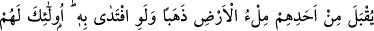

ÎMANDAN KÜFRE DÜŞMEK
90. İnandıktan sonra kâfirliğe sapıp sonra inkârcılıkta daha da ileri gidenlerin
tevbeleri aslâ kabul edilmeyecektir. Ve işte onlar, sapıkların ta kendisidirler.
91. Gerçekten, inkâr edip kâfir olarak ölenler var ya, onların hiçbirinden -fidye
olarak dünya dolusu altın verecek olsa dahî- kabul edilmeyecektir. Onlar için acı
bir azap vardır, hiç yardımcıları da yoktur.
Tevrât’a ve Hz. Mûsâ’ya inandıktan sonra, İncil’i ve Hz. Îsâ’yı inkâr eden yahûdîler
gibi kişiler, Hz. Muhammed’i ve Kur’ân’ı inkâr ettikleri için ya da, Hz. Muhammed’e
peygamber olmazdan evvel inanıp sonra inkâr ettiklerinden ötürü ve bu inkârda ısrarlı
davranıp Hz. Peygamber (s.a.)’e ta’n ettikleri; insanları ona îman etmekten
alıkoydukları ve mîsâklarını bozdukları için inkârları artanlar var ya, işte bunların
tevbeleri kabul edilmeyecektir. Çünkü bunlar, ancak helâke yaklaştıklarında tevbe
ederler. Âyette, “bunların tevbe etmeyişleri” tevbelerinin kabul edilmeyeceği
söylenerek kinâye yoluyla anlatılmıştır. Böylece çok kötü bir durumda oldukları
belirtilmiş ve durumları, Allah’ın rahmetinden ümid kesenlerin durumu gibi gösterilmiş
olmaktadır. Ya da, dinden döndükleri ve inkârları arttığı için, tevbeleri samimi
olmayacağından böyle bir kinâye yapılmıştır.
İşte bunlar tam anlamıyla sapıkların tâ kendileridir. Buradaki hasr ifadesi, hasr-ı
kemal kabilindendir. (Yani, normalde başkalarında da dalâlet bulunabilir, ama tam ve
kâmil anlamıyla dalâlet, ancak bunlarda vardır.) Yoksa, her kâfir, -ister inandıktan sonra
kâfir olsun, isterse hiç inanmayıp kâfir olsun- dalâlettedir.
Îmândan sonra inkâr edenlerin bu inkârda sâbit kadem olmaları ve bunlardan artık
hidâyet beklenemeyecek olması, bunların tam anlamıyla dalâlette olduklarının
göstergelerindendir.